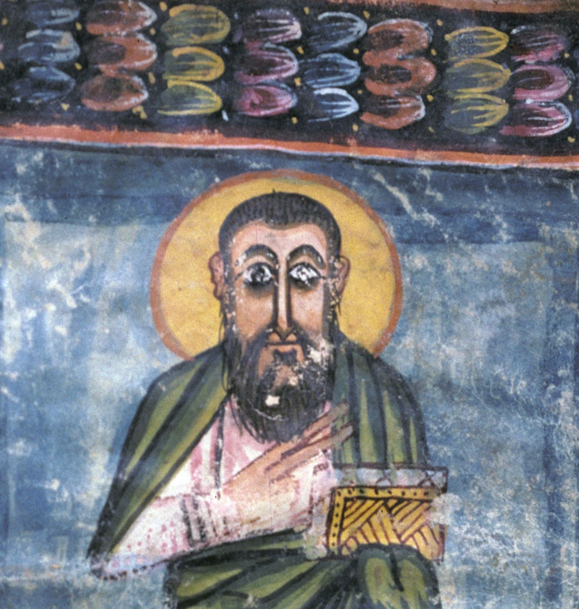
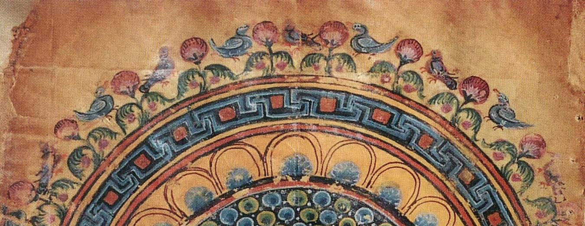
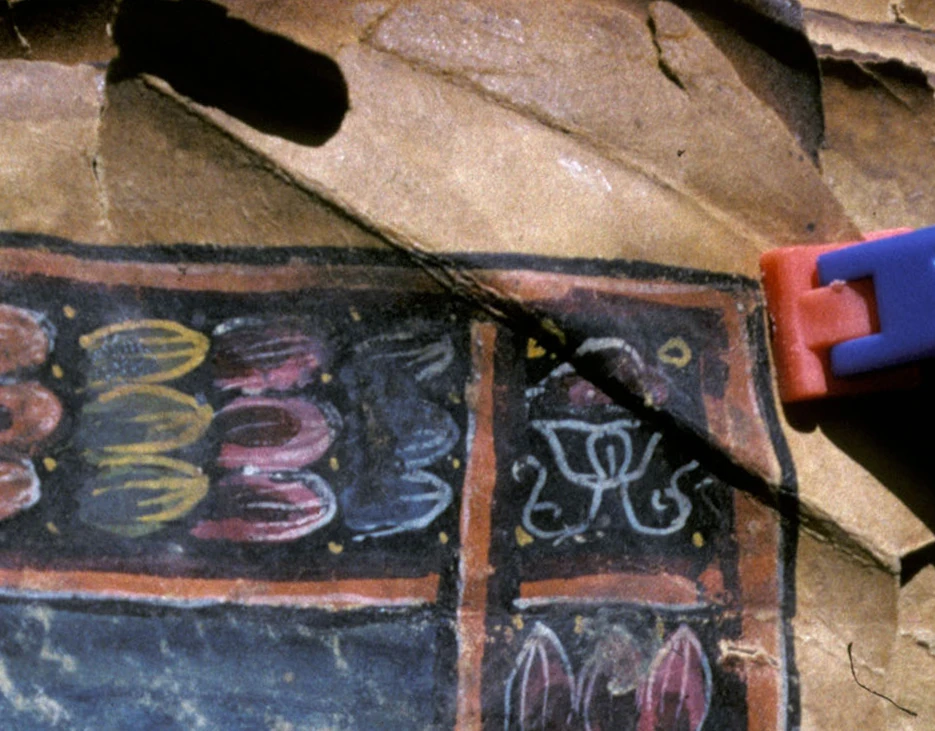

 아직 펼치지 않은 카드
아직 펼치지 않은 카드
2006년 10월, 에티오피아 고원의 아바 가리마 수도원이에요. 보존가의 기록에 따르면 1,400년 넘게 수도원을 떠난 적이 없다는 복음서 두 권이 나무 상자에서 나와 마당의 작업대에 펼쳐졌어요. 그 가운데 한 쪽을 손가락으로 문질러 햇빛 아래 비춰 보세요.
아주아주 오래된 성경책이 상자 밖으로 나와 햇빛을 봐. 같이 비춰 보자!
검수 전 시안이에요(기준서 1판). 장면에는 보존가들이 남긴 기록에 있는 것만 옮겼고, 전설은 전설이라고 밝혔어요. 상상은 ‘눈 감고 상상해 보기’에만 썼어요.
2006년 10월, 에티오피아 북쪽 티그라이 지방의 높은 땅(해발 약 2,400m)에 있는 아바 가리마(‘아바’는 ‘아버지’라는 뜻) 수도원이에요. 영국에 있는 자선 단체 ‘에티오피아 유산 기금’이 보낸 책 보존가(낡은 책을 고쳐 오래 남게 하는 사람) 두 사람이 왔어요.
이 책들은 수도원 밖으로 나간 적이 없다고 해요. 그래서 둥근 ‘보물 집’(수도원의 귀한 물건을 두는 파란 둥근 건물) 앞마당에 작업대를 차렸어요. 낡은 탁자 하나와, 장례 때 쓰는 들것 두 개가 작업대였어요.
“이 책들은 1,400년이 넘도록 수도원을 떠난 적이 없어요. 나라 밖은 말할 것도 없고요.”
보존가 레스터 캐펀의 기록(2008) 가운데서(이 안내서가 옮김)
햇볕을 피해 하루에도 두세 번 작업대를 옮겼어요. 당나귀가 가끔, 원숭이는 자주 들렀어요.
나무 상자에서 꺼낸 그림 쪽 몇 장은 제자리가 아니었어요. 다른 권에 있어야 할 쪽도, 거꾸로 꿰매진 쪽도 있었어요. 수도사들과 의논해 두 권의 쪽 차례를 바로잡았어요.
아주 오래된 성경책을 고치려고 마당에 작업대를 차렸어. 원숭이도 구경 왔대!
물어보기아주 오래된 책을 고친다면, 무엇을 가장 조심해야 할까?
둘째 권(가리마 2)에는 그림 쪽이 열일곱 쪽 있어요. 그 가운데 한 쪽에는 4세기 학자 에우세비오스가 서 있어요. 그는 복음서 대조표를 다듬은 사람이에요. 대조표는 네 복음서(마태·마가·누가·요한이 저마다 쓴 예수 이야기)에서 같은 이야기를 찾게 해 주는 표예요. 이 그림은 그 표 바로 앞에 놓여 있어요.
평소에는 나무 상자에 넣어 두는 책이에요. 작업대는 햇볕을 피해 옮겼지만, 상자에서 막 꺼낸 쪽에 처음 빛이 닿는 순간을 떠올리며 손가락으로 문질러 비춰 보세요.
상자에서 꺼내 햇빛 아래 펼치듯, 손가락이나 마우스로 문질러 비춰 보세요.

가리마 2의 그림 쪽. 금빛 둥근 빛을 두른 사람이 책을 들고 서 있어요(에우세비오스로 봐요) · 「가리마 복음서」 가리마 2의 그림 쪽 · 사진: Michael Gervers · 퍼블릭 도메인 · 위키미디어 공용
빛이 닿으면 숨은 표시가 나타나요.
다 고친 두 권은 전부터 이 책을 넣으려고 만들어 둔 나무 상자로 돌아갔어요. 작업은 모두 수도원 안에서, 뒷날 떼어 내고 다시 고칠 수 있는 방법으로 했어요.
상자 속에 있던 책을 햇빛에 비춰 보자!
물어보기그림 속 사람은 손에 무엇을 들고 있을까?
눈 감고 상상해 보기
높은 고원의 맑은 햇살이 마당에 내려요. 올리브나무 사이로 원숭이들이 오가고, 멀리서 당나귀 방울 소리가 들릴지도 몰라요. 낡은 탁자 위에 1,400여 년 된 양피지가 펼쳐져 있어요. 이 쪽을 처음 칠한 사람은 어떤 빛 아래에서 붓을 들었을까요?
눈을 감아 봐. 따뜻한 햇볕이 내리쬐고, 나무 위에서 원숭이들이 놀고 있어. 아주 오래된 책을 조심조심 한 장씩 넘겨.
오래 ‘별것 아닌 것’으로 여겼던 것이 알고 보니 아주 귀한 것이었던 경험이 있나요?
우리 집에서 제일 오래된 책은 뭘까?
마음에 닿는 한 줄을 고르거나 직접 써 보세요. 한 줄을 남기면 이 자리의 도장이 찍혀요. 이 기기에만 저장돼요.
이야기를 보다 궁금해질 만한 것들이에요. 답을 읽거나 짧은 영화로 보세요.



아직 펼치지 않은 이야기예요. 누르면 이야기가 펼쳐지고 색이 돌아와요. 더 알고 싶으면 근거를 따라가 보세요.
다 펼치면, 다음에 오실 때 새 이야기가 찾아와요.
오늘의 뒷이야기는 여기까지예요. 다음에 오시면 새 이야기가 기다리고 있어요.
펼친 뒷이야기 · 누르면 다시 볼 수 있어요
몇 년 된 책일까 학자들은 오래 12세기보다 오래되지 않은 책으로 여겼어요. 2010년에 알려진 옥스퍼드 대학의 측정값은 330~650년이었어요. 2013년 11월 메르시에가 발표한 값은 가리마 2가 390~570년, 가리마 1이 530~660년이에요.
두 가지 전설 수도원 전승으로는 아바 가리마가 하루 만에 복음서를 쓰고 그렸고, 그가 다 마칠 때까지 하느님이 해가 지지 않게 하셨대요. 494년에 아바 가리마가 콘스탄티노폴리스에서 이 책을 가져왔다는 이야기도 전해요. 둘 다 전해지는 이야기예요.
그림 속 사람 위키백과는 이 그림을 가리마 2의 대조표 앞에 놓인 에우세비오스로 소개해요. 위키미디어 공용의 설명은 책에 십자가가 없고 흰 두루마리도 없으니 복음서 저자 마태가 아니라고 봐요.
작업대를 몇 번 옮겼나 햇볕을 피해 작업대를 옮긴 횟수를 레스터 캐펀은 하루 두 번, 마크 윈스탠리는 하루 세 번이라고 적었어요.
확인한 날 · 2026년 11월 18일 · 바뀌기 쉬운 정보라 정기적으로 다시 확인해요
책은 아바 가리마 수도원이 지켜요. 그림 쪽 사진과 고친 이야기는 아래 기록에서 만날 수 있어요.
그림 쪽의 네 곳을 모두 비춰 찾으면 카드에 금박이 입혀져요.
아이와 함께 ‘영화처럼 보기’를 끝까지 보면 카드가 채색돼요.
‘처음 만나는 기독교 문화’의 깊은 카드예요. 카드 단계와 남긴 글은 이 기기에만 저장돼요.
영화처럼 보기 · 약 2분
화면을 누르거나 → 키를 누르면 넘어가요. 그냥 두어도 자막이 저절로 넘어가요.